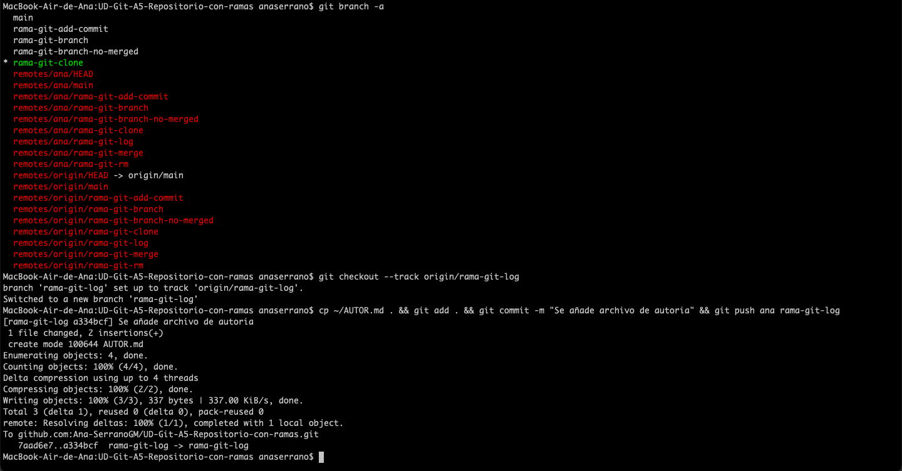

Realiza cada uno de los siguientes apartados. Trabajarás con un repositorio y sus ramas
Descárgate el repositorio en una carpeta local.
Este repositorio tiene varias ramas cada una con distintos commits. Lístalas e indica qué significa el asterisco
El asterisco denota la rama actual en la que se está trabajando en local (a donde apunta el puntero HEAD).
Cambia de rama y fíjate en el sistema de archivos (working tree) cómo aparecen y desaparecen los ficheros. Siguen estando ahí, pero en cada rama (piensa en las ramas como mundos paralelos) los contenidos son distintos.
Efectivamente al cambiarte de rama, los archivos cambian como se pueden comprobar.
En cada rama debes hacer una modificación: añadir pantallazos e introducirlos en el este fichero index
Modificaciones en rama: rama-git-add-commit
Modificaciones en rama: rama-git-branch

Modificaciones en rama: rama-git-branch-no-merged

Modificaciones en rama: rama-git-clone
Modificaciones en rama: rama-git-log
Modificaciones en rama: rama-git-merge
Modificaciones en rama: rama-git-rm
En una de las ramas hay muchos ficheros temporales que debes borrar. Asegúrate de que sólo borras los imprescidibles
Tras realizar los distintos commits debes fusionar cada rama a la rama principal.
Muestra el estado de los commits de forma gráfica
Crea una rama nueva y añade contenido relacionado con git
Muestra las ramas que todavía no se han mergeado con respecto a la rama actual
Una vez fusionadas/mergeadas todas las ramas sube el repositorio local en el remoto